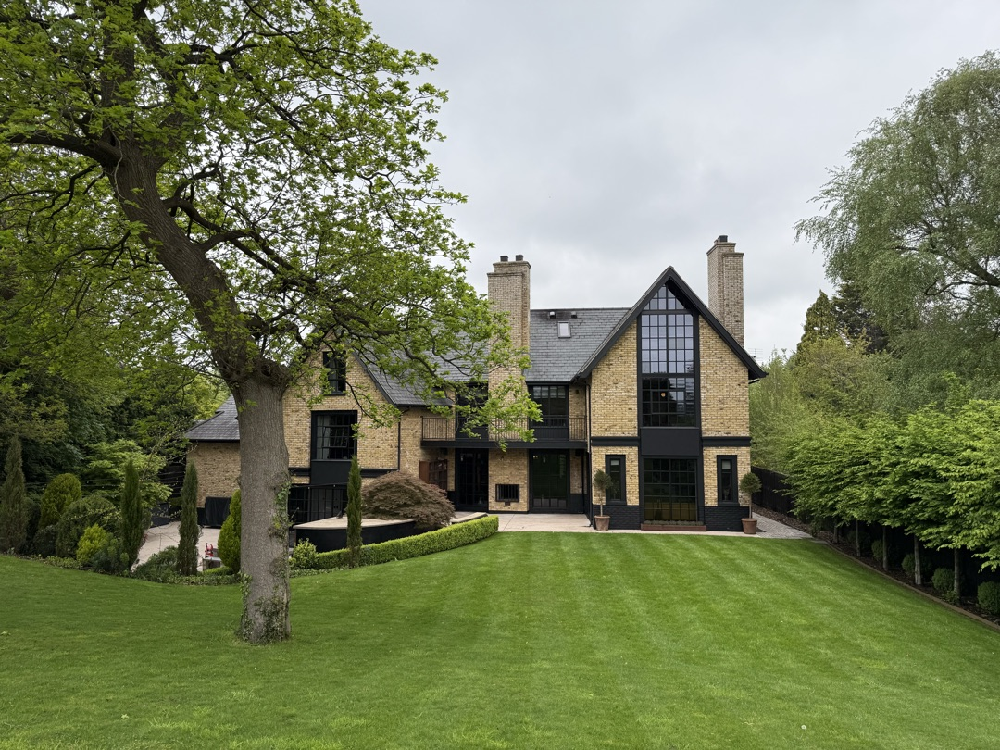
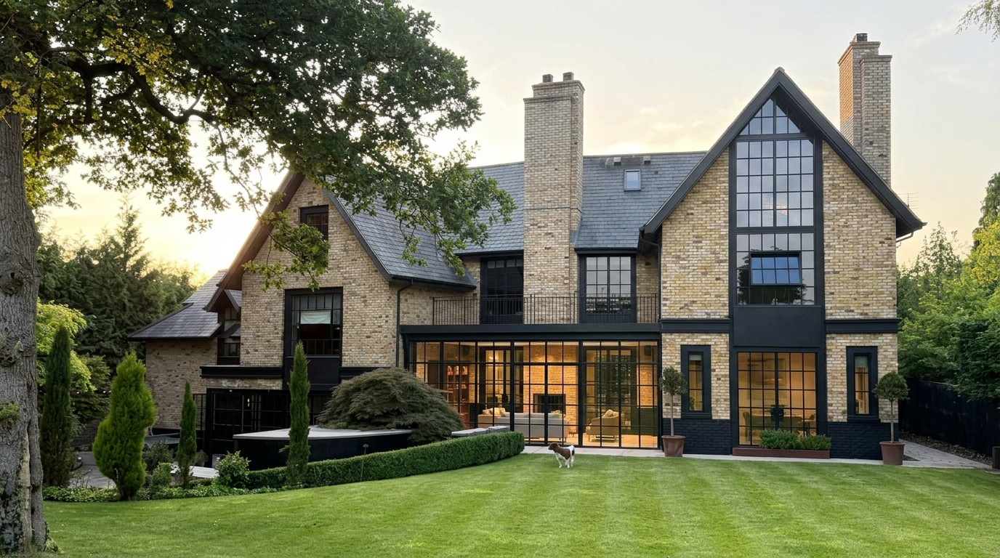

The Ponds
A contemporary masterpiece in the heart of Cheshire
Guide Price £2,100,000
A contemporary masterpiece in the heart of Cheshire
Guide Price £2,100,000
The Residence
Designed and constructed in 2015/16 as a dream family home, The Ponds is an architectural masterpiece offering over 5,300 square feet of cutting-edge contemporary living set within 0.83 acres of stunning south-facing landscaped gardens in the heart of Goostrey village.
Built from mellow brick with deep square bays, generous picture windows and a natural slate roof, the house sits across three carefully considered floors. A galleried entrance hall — its rear wall almost entirely glass — sets the tone: natural light, considered materials and a profound sense of space that runs throughout.

Outside

Approached through electric gates with brick pillars, a gravel driveway provides generous parking and a turning area. The formal parterre with clipped hedging creates an immediate sense of arrival.
To the rear, a wide concrete terrace — complete with built-in BBQ and pizza oven — extends the living space outdoors, with a Control4 sound system piped to the terrace. A raised timber decked seating area sits beneath two ancient oak trees, while manicured lawns stretch south to a fenced vegetable patch, productive orchard of pear and apple trees, and a well-maintained greenhouse.
The entire plot is beautifully screened by mature specimen trees and pleached hornbeam, creating an entirely private sanctuary just moments from the centre of the village.


Accommodation

Opportunities
With 0.83 acres of grounds and a generous footprint, The Ponds offers significant scope for extension and enhancement under permitted development rights — subject to the usual planning considerations. The concept renderings below illustrate the kind of transformation that could be achieved.

A full-width Crittall-style glass extension beneath the first-floor balcony, creating a dramatic open-plan living space with seamless garden views. Designed to preserve the architectural DNA of the original house.
An outdoor freshwater swimming pool integrated into the south-facing rear garden — transforming the grounds into a private resort. AI concept animation.
These are AI-generated concept visualisations for illustrative purposes only. Any development would be subject to the appropriate planning permissions and building regulations.
Goostrey, Cheshire
Set in the heart of Goostrey village, The Ponds enjoys a coveted position within walking distance of local shops, pharmacy, post office, two village pubs and the primary school. Goostrey Railway Station is also within walking distance, providing direct services to Manchester, Crewe and beyond, with connections to London, Liverpool, Birmingham and Chester.
The M6 and M56 motorways are easily accessible, and Manchester Airport is a short drive away — making this an exceptional base for commuters and families alike.
Enquiries